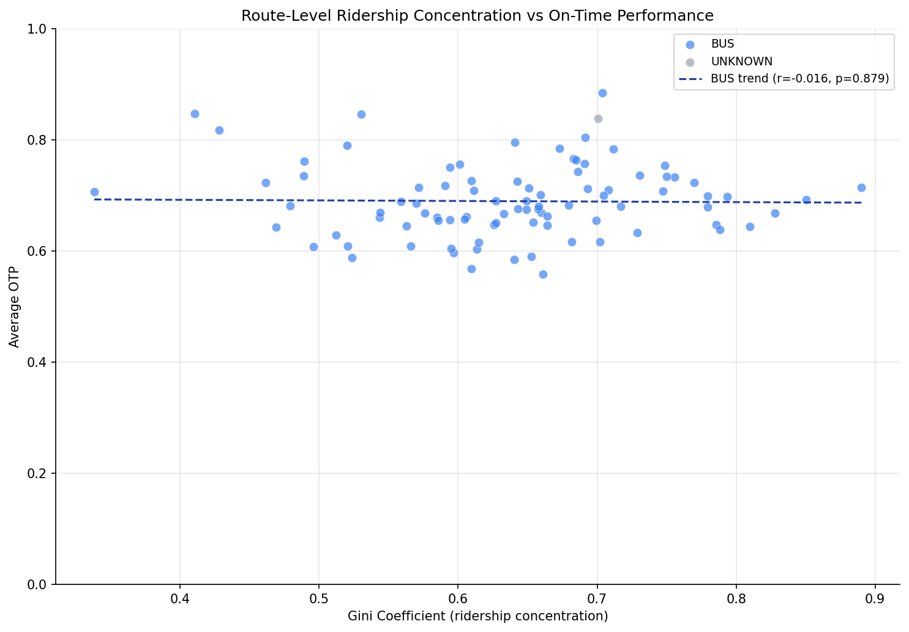
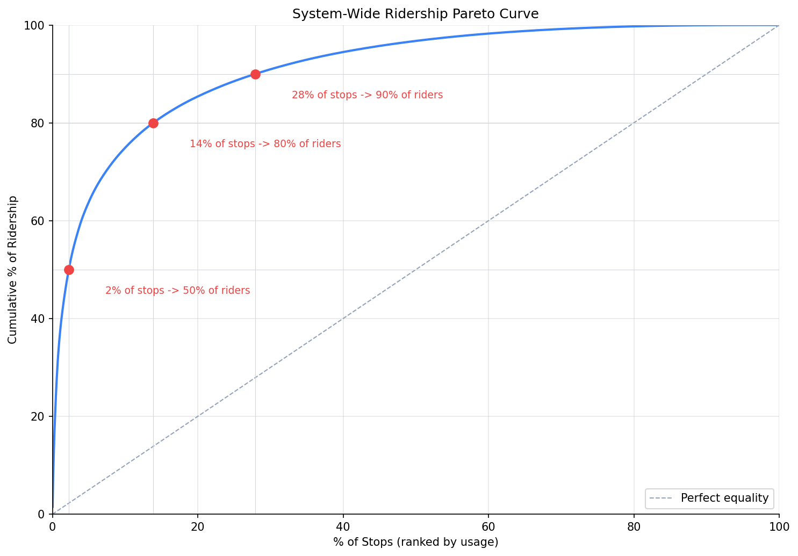

Analysis
34 - Ridership Concentration (Pareto)
Equity and Strategic Planning
Coverage: 2019-01 to 2025-11 (from otp_monthly).
Built 2026-03-20 19:31 UTC · Commit 1ffb273
Page Navigation
Analysis Navigation
Data Provenance
flowchart LR
34_ridership_concentration(["34 - Ridership Concentration (Pareto)"])
f1_34_ridership_concentration[/"data/bus-stop-usage/wprdc_stop_data.csv"/] --> 34_ridership_concentration
t_otp_monthly[("otp_monthly")] --> 34_ridership_concentration
01_data_ingestion[["Data Ingestion"]] --> t_otp_monthly
t_routes[("routes")] --> 34_ridership_concentration
01_data_ingestion[["Data Ingestion"]] --> t_routes
d1_34_ridership_concentration(("numpy (lib)")) --> 34_ridership_concentration
d2_34_ridership_concentration(("polars (lib)")) --> 34_ridership_concentration
d3_34_ridership_concentration(("scipy (lib)")) --> 34_ridership_concentration
classDef page fill:#dbeafe,stroke:#1d4ed8,color:#1e3a8a,stroke-width:2px;
classDef table fill:#ecfeff,stroke:#0e7490,color:#164e63;
classDef dep fill:#fff7ed,stroke:#c2410c,color:#7c2d12,stroke-dasharray: 4 2;
classDef file fill:#eef2ff,stroke:#6366f1,color:#3730a3;
classDef api fill:#f0fdf4,stroke:#16a34a,color:#14532d;
classDef pipeline fill:#f5f3ff,stroke:#7c3aed,color:#4c1d95;
class 34_ridership_concentration page;
class t_otp_monthly,t_routes table;
class d1_34_ridership_concentration,d2_34_ridership_concentration,d3_34_ridership_concentration dep;
class f1_34_ridership_concentration file;
class 01_data_ingestion pipeline;
Findings
Findings: Ridership Concentration (Pareto)
Summary
PRT ridership is extremely concentrated: just 2% of stops serve 50% of all weekday riders, and 14% of stops serve 80%. The system-wide Gini coefficient is 0.82, indicating very high inequality in stop-level usage. However, per-route ridership concentration (Gini) has essentially zero correlation with that route's OTP (r = -0.016, p = 0.88), meaning whether a route's riders are clustered at a few stops or spread evenly has no bearing on schedule reliability.
Key Numbers
- 2.2% of stops serve 50% of ridership
- 13.9% of stops serve 80% of ridership
- 27.9% of stops serve 90% of ridership
- System-wide Gini = 0.824
- Per-route Gini range: 0.338 - 0.890 (median 0.649)
- 95 routes with >= 3 stops analyzed
- 90 routes matched to OTP data
- Gini vs OTP (bus-only): Pearson r = -0.016 (p = 0.879), Spearman rho = 0.103 (p = 0.339)
Observations
- The Pareto curve is steep: the top ~150 stops (out of 6,700+) account for half of all weekday boardings and alightings. This is more extreme than a classic 80/20 rule -- it's closer to a 2/50 pattern.
- Most stops see very little usage: the median stop handles only ~7 riders/day, while the top stops see 2,000-5,800/day. The bottom 70% of stops collectively serve only 10% of ridership.
- Route-level concentration varies widely: some routes have Gini as low as 0.34 (relatively even usage across stops) while others reach 0.89 (nearly all ridership at a few stops). Flyer/express routes tend to have higher Gini since ridership clusters at downtown endpoints.
- Concentration does not predict OTP. The scatter plot shows no trend at all -- the regression line is essentially flat. Routes with highly concentrated ridership perform no better or worse than those with evenly distributed usage.
Discussion
The extreme system-wide concentration (Gini = 0.82) reinforces the stop consolidation finding from Analysis 31: most stops contribute very little ridership, and removing the lowest-usage ones would affect few riders while potentially improving OTP by reducing stop count.
The null result for Gini vs OTP is notable. One might hypothesize that routes with concentrated ridership would have better OTP (less dwell time at most stops), but this doesn't hold. This suggests that dwell time at individual stops is not a dominant factor in OTP variance -- the time cost of stopping (deceleration, door opening, acceleration) matters more than the time cost of boarding passengers. This aligns with the Analysis 07 finding that raw stop count, not passenger volume, drives OTP.
The 2/50 concentration ratio has resource allocation implications: if PRT focused infrastructure investment (shelters, real-time signs, ADA upgrades) on just 150 stops, it would reach half of all riders. The current shelter coverage of 7% (Analysis 32) suggests significant room to target the highest-impact locations.
Caveats
- Stop-level usage data is from FY2019; current patterns may differ, especially post-pandemic.
- Gini is computed from stop-route combinations, not physical stops. Routes sharing physical stops may inflate the apparent concentration.
- The OTP data covers a longer time range (2019-2025) than the usage snapshot (2019), so the correlation compares static usage structure against time-averaged OTP.
- Very short routes (< 3 stops) are excluded from the Gini analysis, which drops a few incline and shuttle routes.
Output

scatter plot of route Gini vs average OTP.

system-wide Pareto curve.
No interactive outputs declared.
cumulative ridership share by stop rank.
Preview CSV
per-route Gini coefficient and OTP.
Preview CSV
Methods
Methods: Ridership Concentration (Pareto)
Question
How concentrated is ridership across stops? What fraction of stops serves 80% of riders, and does ridership concentration on a route correlate with that route's OTP?
Approach
- Aggregate pre-pandemic weekday stop-level ridership (datekeys 201909, 202001) to physical-stop level and per-route level.
- System-wide Pareto: sort all stops by usage, compute cumulative share, and find the fraction of stops that serve 50%, 80%, and 90% of total ridership.
- Per-route Gini coefficient: for each route, compute the Gini coefficient of stop-level usage as a concentration metric (0 = perfectly even, 1 = all ridership at one stop).
- Join per-route Gini with route-level average OTP from the database and test for correlation (Pearson, Spearman).
- Generate a system-wide Pareto curve and a scatter plot of Gini vs OTP by route.
Data
| Name | Description | Source |
|---|---|---|
wprdc_stop_data.csv |
Stop-level boardings/alightings | Local CSV (data/bus-stop-usage/) |
otp_monthly |
Monthly OTP per route | prt.db table |
routes |
Route name and mode | prt.db table |
Output
output/pareto_system.csv-- cumulative ridership share by stop rankoutput/route_gini.csv-- per-route Gini coefficient and OTPoutput/pareto_curve.png-- system-wide Pareto curveoutput/gini_vs_otp.png-- scatter plot of route Gini vs average OTP
Sources
| Name | Type | Why It Matters | Owner | Freshness | Caveat |
|---|---|---|---|---|---|
| data/bus-stop-usage/wprdc_stop_data.csv | file | Referenced via DATA_DIR path composition in analysis script. | Local project data owner not specified. | Snapshot file; refresh by rerunning its pipeline step. | May lag upstream source updates. |
| otp_monthly | table | Primary analytical table used in this page's computations. | Produced by Data Ingestion. | Updated when the producing pipeline step is rerun. | Coverage depends on upstream source availability and ETL assumptions. |
| routes | table | Primary analytical table used in this page's computations. | Produced by Data Ingestion. | Updated when the producing pipeline step is rerun. | Coverage depends on upstream source availability and ETL assumptions. |
| numpy | dependency | Runtime dependency required for this page's pipeline or analysis code. | Open-source Python ecosystem maintainers. | Version pinned by project environment until dependency updates are applied. | Library updates may change behavior or defaults. |
| polars | dependency | Runtime dependency required for this page's pipeline or analysis code. | Open-source Python ecosystem maintainers. | Version pinned by project environment until dependency updates are applied. | Library updates may change behavior or defaults. |
| scipy | dependency | Runtime dependency required for this page's pipeline or analysis code. | Open-source Python ecosystem maintainers. | Version pinned by project environment until dependency updates are applied. | Library updates may change behavior or defaults. |